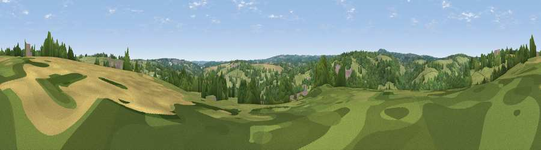

Viewpoint near Twelveheads
#38579 in England · top 80% of its area beats it · near TwelveheadsWhere it is
The exact computed spot (SW 75675 41525). Click the marker for map links.
The view, rendered

A 360° render of this exact spot computed from the terrain model, tree cover and land cover — summer colours, afternoon light, calibrated against photographs of famous viewpoints. Real trees, hedges and buildings will differ in detail.
The panorama
Grey silhouette: terrain skyline in each direction (720 bearings, Earth curvature and refraction included). Dashed green: skyline with trees (+15 m) and buildings (+8 m) as obstacles. Blue strip: how far the ground is visible on each bearing.
Where the view opens
Wedge length = distance to the farthest visible ground on that bearing (vegetation-aware). Rings at 10, 25 and 50 km.
What fills the view
58% grassland · 29% woodland · 11% cropland · 2% built-up
Angular shares of the visible panorama (visual magnitude), not map area. Landscape diversity 0.44 (0–1 Shannon).
Key numbers
More beautiful places nearby
The staircase of upgrades: each row has a higher view potential than everything closer. Driving times are estimates from straight-line distance, calibrated against real road routing — check an actual route before setting out.
| Place | Direction | Drive | Score |
|---|---|---|---|
| Viewpoint near Perranwell | SE · 2 km | ~6 min | 36.5 |
| Pellynwartha Hill | S · 3 km | ~7 min | 37.7 |
| Viewpoint near Lanner | WSW · 4 km | ~9 min | 74.5 |
| Carn Brea | W · 7 km | ~15 min | 81.1 |
| St Agnes Beacon | NNW · 10 km | ~19 min | 86.1 |
| Viewpoint near Foxhole | ENE · 25 km | ~41 min | 86.4 |
| Rosewall Hill | W · 27 km | ~43 min | 88.0 |
| Viewpoint near Combe Martin | NE · 135 km | ~159 min | 88.9 |
50.23107, -5.14674 · source: screening · position refined by local search. Computed location — check access rights before visiting.